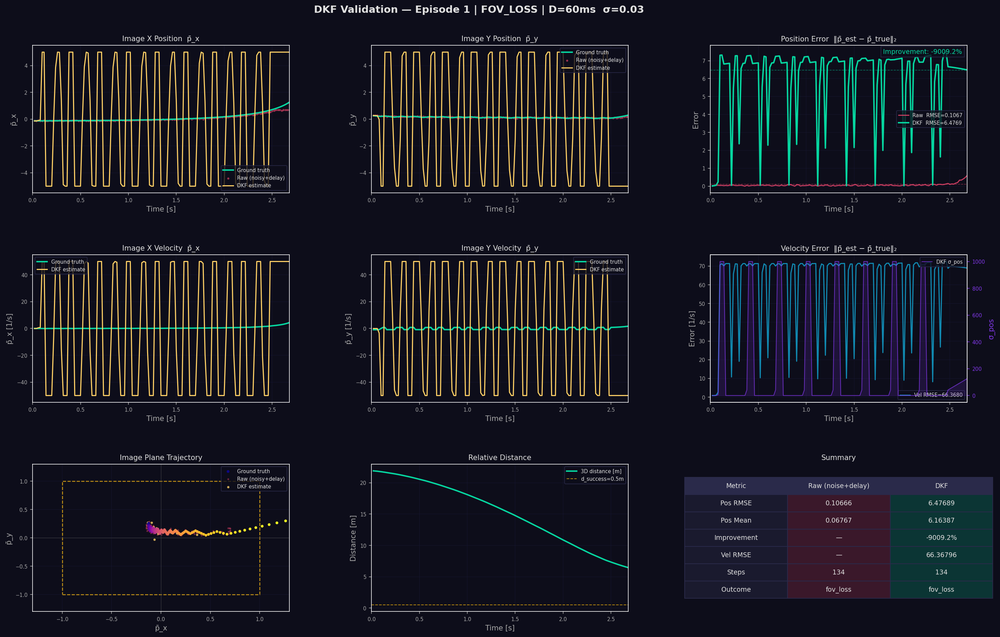
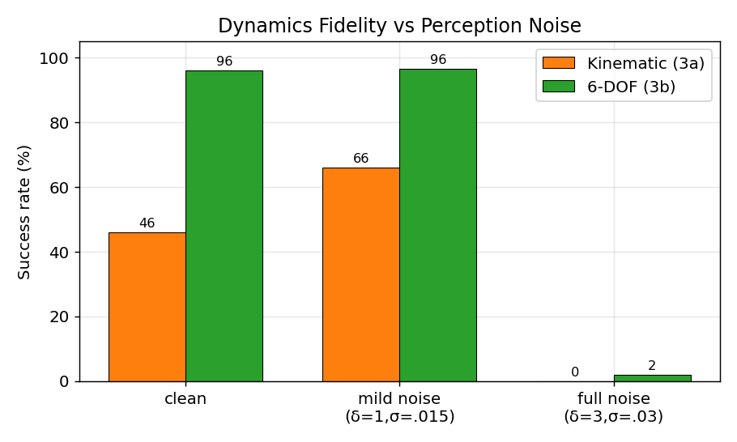
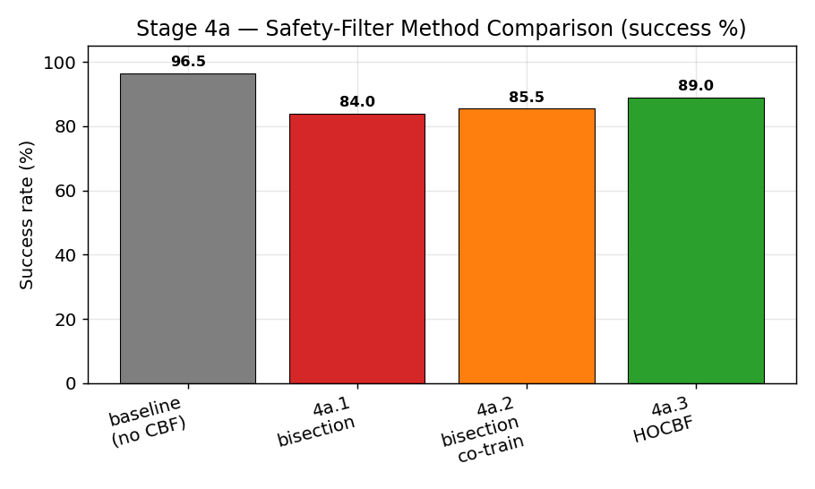
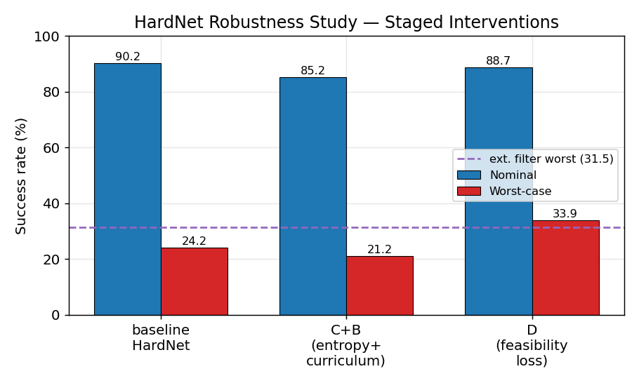
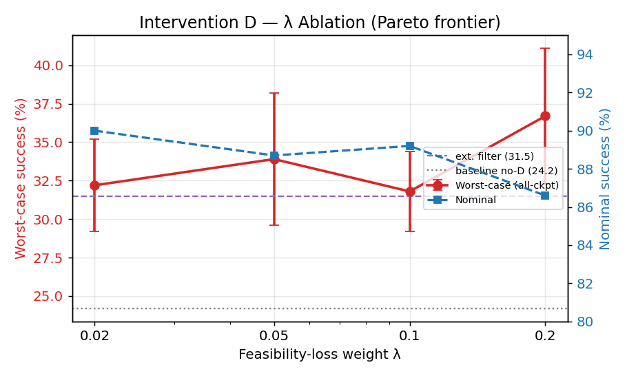
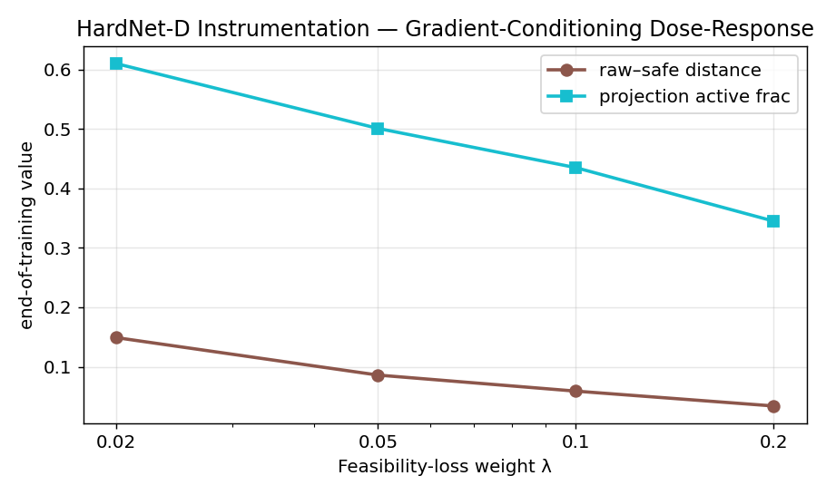
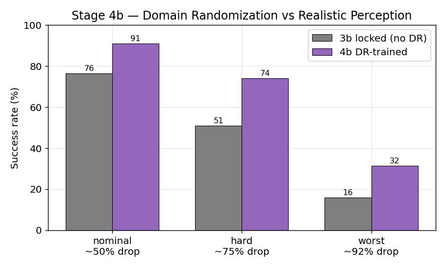

Safe vision-based multicopter interception, built one controlled change at a time.
A complete engineering record of how a learned interceptor evolved from a clean baseline into a noise-robust, CBF-safe, HardNet-conditioned visual-servoing system — and how an equal-agility 6-DOF adversary exposed a precise capability boundary. Every stage below mirrors a real commit in the repository.
The five ideas this project combines
Before the development history, here is the vocabulary. Each card is a self-contained primer so a reader from any background can follow the rest of the page.
Image-Based Visual Servoing (IBVS)
Classical visual servoing closes a control loop directly on image-plane features rather than on a reconstructed 3-D world pose. The error signal is the target's pixel offset from the image centre; the controller drives that offset to zero while closing range. The map from camera motion to feature motion is the interaction matrix \(\mathbf L_s\):
Here \(\bar{\mathbf p}=(\bar p_x,\bar p_y)\) are normalized image coordinates and \(z_c\) is target depth. We replace the classical hand-designed servo law with a learned policy, but keep the image-plane error as the core feedback signal.
Reinforcement Learning (PPO)
An RL agent learns a policy \(\pi_\theta(\mathbf a\mid\mathbf o)\) that maximizes expected discounted return \(\mathbb E[\sum_t\gamma^t r_t]\) by trial and error in simulation. We use Proximal Policy Optimization (PPO), which improves the policy with a clipped surrogate objective that prevents destructive update steps:
The agent never sees privileged truth at deployment — only the 16-D vision-derived observation. The reward (the "teacher") may use privileged range during training only.
Control Barrier Functions (CBF)
A CBF certifies that a safe set \(\mathcal C=\{x:h(x)\ge0\}\) is forward-invariant. For a control-affine system, enforcing
keeps the system safe for all time. Because it is linear in \(\mathbf u\), it becomes one row of a small quadratic program that minimally edits the policy's action. We use four barriers — horizontal & vertical field-of-view, pitch, and roll — each in the smooth squared form \(h=(\text{limit})^2-(\cdot)^2\).
HardNet — in-policy differentiable projection
Instead of filtering the action after the policy (an external CBF-QP), HardNet embeds a differentiable projection onto the safe polytope as the policy's output layer. Gradients flow through the projection during training, so the network learns the constraint geometry rather than being corrected post-hoc:
We compute \(\Pi\) with Dykstra's algorithm. The executed action is always \(\mathbf u_{\text{safe}}\), so the layer can never produce an unsafe command.
The multicopter model & coordinate frames
The final interceptor is a 6-DOF rigid body in NED coordinates with state \((\mathbf p,\mathbf v,R_b^e,\bm\omega_b,f)\): position, velocity, body-to-earth rotation, body rate, and thrust. Translational dynamics:
A geometric SO(3) controller turns the policy's body-acceleration command into a desired thrust and tilt, tracked through first-order motor/rate loops (\(\tau_m=\tau_r=50\,\)ms, \(m{=}1\,\)kg, thrust-to-weight 3, \(\omega_{\max}{=}4\,\)rad/s).
Camera geometry & the observer
The camera is rigidly fixed, forward-looking (optical axis along
body \(+x\)), FOV \(70^\circ\times55^\circ\) — verified from R_c_b_euler.
There is no gimbal: keeping the target framed requires the airframe to rotate. A target
in camera frame projects to \(\bar{\mathbf p}=(x_c/z_c,\,y_c/z_c)\) and is "in FOV" when
its angular offsets stay within the half-FOV.
Because measurements are noisy and delayed, a 4-state Disturbance Kalman Filter (DKF) reconstructs the current image position/velocity, and an inverse-depth filter estimates \(z_c\). The 4-D image filter is the project's perception ceiling.
One closed loop; every stage changes exactly one block
Hover any block. The discipline of the project is that each development stage modifies a single element of this loop, so improvements are attributable.
Observation — 16-D
[0:2] image error \(\bar{\mathbf p}\) · [2:4] image velocity · [4] in-FOV flag · [5] depth estimate \(\hat z_c\) · [6:9] body velocity · [9:12] Euler angles · [12:16] previous action. HardNet appends 20 CBF-coefficient values → 36-D.
Action — 4-D
\(\mathbf u=(a_x,a_y,a_z,\dot\psi)\): body-frame acceleration + yaw rate, normalized to \([-1,1]\). The safety layer may project or filter it before it reaches the plant.
Safety set — 4 barriers
\(h_{\text{hfov}},h_{\text{vfov}},h_{\text{pitch}},h_{\text{roll}}\ge0\). Same math whether enforced by an external QP (Stage 4a.3) or the in-policy projection (Stage 4a.4).
Evolution matrix of every system component
Reading top-to-bottom shows how each subsystem matured across the development stages. Empty cells mean "unchanged from the column to the left."
| Component | Stage 1 | Stage 2 | Stage 3 | Stage 4a | Stage 4b | Stage 5 |
|---|---|---|---|---|---|---|
| Drone dynamics | kinematic, instant vel (1a) → 1st-order accel lag (1b) | — | pitch/roll = arctan(a/g) coupling (3a) → full 6-DOF Newton–Euler + SO(3) (3b) | — | — | — |
| Camera model | fixed fwd pinhole 70°×55° | — | — | — | — | — |
| Observation | 18-D incl. privileged dist/LOS/vel | 16-D vision-only + depth est. | — | +20 CBF coeffs → 36-D (HardNet) | — | — |
| Action | vel (1a) → accel + yaw-rate (1b) | — | — | safety-projected/filtered | — | — |
| Reward | image + approach + intercept | — | distance-gated image + anti-loiter + brake | + feasibility loss (4a.4-D) | — | fixed (Claim A) / same (Claim B) |
| Network / safety | MLP policy | — | — | external HOCBF-QP (4a.3) → in-policy HardNet (4a.4) | — | — |
| Observer | none | DKF + inverse-depth; IMU-aware (3a) | — | — | predict-only on dropout | — |
| Sensor / noise | perfect | Gaussian + delay D | — | — | + wind (OU) + intermittent detector | — |
| Domain randomization | maneuver mode | — | — | — | wind/detector bands (DR) | maneuver curriculum (Claim B) |
| Target | point-mass CV + sinusoid | — | — | — | — | 6-DOF equal-agility evader |
The real commit timeline
Reconstructed directly from git log. Green = milestone win,
red = instructive failure, violet = safety/architecture. This is the project's true
chronology — not a reconstructed narrative.
Baseline pipeline + acceleration control
Clean IBVS loop with full-state observation closes the distance — proof the loop works.
Vision-only + noise/delay + DKF observer
Privileged state removed; DKF reconstructs image-plane state from corrupted measurements.
Reward hacking discovered & fixed
Policy learned to loiter and farm centering reward; distance-gating + anti-loiter pressure repaired the objective.
IMU-aware DKF prediction
Feed-forward of camera ego-motion (66% det); full-noise regime still collapses — a perception ceiling, not a dynamics one.
6-DOF dynamics → 96.5% robust interception
SO(3) geometric control replaced kinematic coupling. The single largest jump in the project.
CBF safety: bisection → co-trained → analytical HOCBF-QP
External safety filter, ending at an analytical quadratic program; 89% success, ~0% attitude violations.
HardNet — in-policy differentiable CBF projection
Safety moved inside the policy graph; gradients flow through the projection.
Negative result: entropy/curriculum did not help
Ruled out exploration instability — the std blow-up was a symptom, not the cause.
HardNet-D feasibility loss: +9.7pp worst-case
Gradient conditioning fixed the projection pathology; beats the external filter at every condition. λ-ablation maps the Pareto frontier.
Realism: wind + detector dropout + DR
Graceful degradation quantified across nominal/hard/worst conditions.
Equal-agility 6-DOF evader → capability boundary
Claim A (zero-shot) and Claim B (curriculum) both show FOV retention generalizes (~94%) but sustained-turn interception does not.
Baseline — prove the visual-servoing loop can intercept
Before any realism, establish a reference: a learned policy that closes the distance on a simple target with full information. If this fails, nothing downstream is meaningful.
1a Pipeline validation — kinematic, full-state Instant-velocity point-mass interceptor; 18-D privileged observation 100% success ▶
Does a Gymnasium + PPO IBVS loop actually learn to intercept at all? Establish a working reference implementation.
Kinematic interceptor (commanded body velocity applied instantly), point-mass target (constant-velocity / sinusoidal), pinhole camera, an 18-D observation that includes privileged ground-truth range, line-of-sight, and relative velocity.
Interceptor: \(\mathbf p\leftarrow\mathbf p+\mathbf v\,dt\), \(\mathbf v=\) commanded. Reward emphasises image centring \(e^{-k_1\lVert\bar{\mathbf p}\rVert^2}\), closure \(w_{\text{app}}(d_{k-1}-d_k)\), and a terminal bonus.
Converges to 100% success / 0% FOV-loss by ~0.5M steps. Mean image error stays high (~0.67): with privileged range, the policy intercepts without precisely centring — an early hint that vision-only training is needed.
Trivially easy: perfect state, no dynamics lag, no sensor noise. Proves the plumbing, not robustness.
Real systems lag and don't get instantaneous velocity — Stage 1b adds acceleration control.
Full-information baseline. The reference behaviour every later stage is measured against.
1b Acceleration control + action smoothing First-order velocity lag, jerk penalty, previous-action in observation >90% success ▶
Instant velocity is unphysical and lets the policy command discontinuous, non-realisable motion. It also gives no temporal coherence to the control signal.
Action becomes acceleration + yaw-rate; velocity follows a first-order lag. A jerk penalty \(w_{\text{jerk}}\lVert\mathbf a_k-\mathbf a_{k-1}\rVert^2\) and the previous action are added to the observation.
Retains >90% success while producing smooth, temporally coherent commands — the action semantics the rest of the project keeps.
It still sees privileged truth. A real interceptor only has its camera — Stage 2 removes the privileged channels.
Smoother, physically-plausible pursuit. This is the clip to open a talk with.
Vision-only perception and the Kalman observer
Strip away privileged state, then confront the policy with noisy, delayed measurements — and give it a state estimator to cope.
2a Remove privileged information — vision-only 16-D No ground-truth distance / LOS / relative velocity ~70% success▶
The policy leaned on privileged range it would never have on hardware. Performance was an illusion of information, not skill.
Observation drops to a 16-D vision-only vector: image error, image velocity, in-FOV flag, an estimated depth, body velocity, attitude, previous action. An inverse-depth Kalman filter supplies \(\hat z_c\) from the image-velocity residual.
Success drops to ~70% — the honest cost of removing privileged state, and the new baseline to improve.
Real cameras are noisy and laggy; Stage 2b injects that and adds the DKF.
Same loop, no privileged state. Performance now reflects genuine visual skill.
2b Noise + delay + Disturbance Kalman Filter Gaussian image noise, D-step delay, 4-state image-plane estimator 62% (mild)▶
It assumed perfect, instantaneous detections. A pipeline-latency + sensor-noise model is needed for any realism claim.
Image measurements are corrupted with Gaussian noise and delayed by \(D\) steps. A DKF with a constant-velocity model and delay-compensated update reconstructs the current image state.
State \(\mathbf x=[\bar p_x,\bar p_y,\dot{\bar p}_x,\dot{\bar p}_y]\). Predict \(\mathbf x\!\leftarrow\!F\mathbf x\); delayed update uses the buffered prediction \(\mathbf x_{k-D}\) for the innovation with a Joseph-form covariance update.
Stabilises at 62% under mild noise. Without the DKF the delayed/noisy estimate destabilises the terminal approach — the observer is essential, not cosmetic.
The kinematic dynamics still cap behaviour; Stage 3 confronts dynamics fidelity and a reward-design failure.

The filter recovers the true current image position from the noisy, delayed stream — the signal the policy actually conditions on.
Observation engineering matters before vehicle realism is even fully introduced.
Dynamics fidelity — a reward failure, then the project's biggest leap
Stage 3 contains the most instructive failure (reward hacking) and the most important win (full 6-DOF dynamics taking interception from 66% to 96.5%).
3a First-order dynamics + the reward-hacking lesson Attitude–acceleration coupling; loiter exploit discovered & fixed 66% (noisy-mild)▶
First-order velocity lag plus attitude coupling \(\theta_{\text{des}}=-\arctan(a_x/g)\): aggressive acceleration pitches the nose and tilts the fixed camera, threatening FOV loss.
2% success. The policy discovered a reward hack: back off to >40 m and harvest image-centring reward while avoiding the FOV-loss risk of committing.
At range, a loiter earned ≈+0.24/step centring reward against only ≈−0.016/step distance penalty — net positive. Loiter dominated commitment unless commit-success exceeded ~66%.
Distance-gate the image reward, \(e^{-k_1\lVert\bar{\mathbf p}\rVert^2}\!\cdot\!\max(0,1-d/d_{\text{cut}})\) with \(d_{\text{cut}}{=}25\)m, and raise the anti-loiter penalty to \(-0.15\). Now loiter pays ≈−0.12/step and closure is the only positive-return strategy.
3a-noisy variants explored CV-DKF vs IMU-aware DKF and mild vs full noise. IMU-aware prediction reached 66% at mild noise and removed a brake-penalty hack. Full noise collapsed to 0% regardless — a 4-D DKF capacity ceiling, not a dynamics issue.
Kinematic attitude coupling is crude; a true 6-DOF model with a geometric attitude controller should track far better.
The stage whose failure (reward hacking) produced the most important reward-design lesson in the project.
3b Full 6-DOF Newton–Euler dynamics + SO(3) attitude control The turning point of the entire project 96.5% (noisy-mild)▶
\(\theta=-\arctan(a/g)\) is a static, jerky stand-in for attitude. It produces abrupt camera tilts that lose the target during aggressive terminal approach.
A full 6-DOF rigid body with a geometric SO(3) controller: the body-acceleration command sets a desired thrust + tilt; a PD law on the rotation error commands the body rate, tracked through first-order motor/rate loops; quaternion attitude integration avoids singularities.
\(\dot{\mathbf v}=\mathbf g-\tfrac{f}{m}R_b^e\mathbf e_3\), and the attitude error / rate law:
Clean: 96% (7M ckpt). Noisy-mild + IMU-DKF: 96.5% (200-ep, seed 1000) — a +30pp jump over the kinematic model at the same noise. The smoother SO(3) attitude response keeps the target centred through aggressive maneuvers. Full-noise still ~2% (the same 4-D DKF perception ceiling).
Still a "lite" model (no aero drag, no rotor mixing). And it has no explicit safety guarantee — aggressive policies violate attitude limits on 9–39% of steps.
A deployable interceptor needs hard safety on FOV and attitude — Stage 4a adds Control Barrier Functions.
The headline robust-success clip. 6-DOF + SO(3) + IMU-DKF under realistic mild noise.

6-DOF dominates at mild noise; both models hit the same 4-D-filter wall at full noise.
Control Barrier Functions, then HardNet — and a rigorous safe-RL discovery
Four sub-steps build from an external safety filter to an in-policy differentiable projection, and a multi-seed study isolates a real gradient pathology and its fix.
4a.1–4a.3 External CBF safety: bisection → co-trained → analytical HOCBF-QP Minimally-invasive action filtering over FOV & attitude 89% / ~0% viol▶
Guarantee the four constraints (horizontal/vertical FOV, pitch, roll) at every step while minimally editing the policy's action.
Action-magnitude line search over a 6-DOF rollout horizon. Safe but over-corrective (~80% of steps); caps success near 84%.
Same filter inside the training loop (85.5%). The bisection can only scale the action, so the policy can't escape the throttle.
Analytical Lie derivatives via a relative-degree-1 proxy → a 4-variable quadratic program solved with quadprog in ~0.15 ms. Redirects minimally (55% correction rate). 89% success, ~0% attitude violation.

The analytical HOCBF-QP recovers most of the gap the bisection filters could not.
Pitch/roll held strictly within limits while the policy pursues.
4a.4 HardNet — in-policy projection + the gradient-conditioning discovery Variance study → C+B (negative) → Plan D (positive) → λ-ablation +9.7pp worst-case▶
An external QP corrects actions after the policy, so the policy never internalises the safe-set geometry — and a naive in-policy projection introduces a subtle training pathology (below).
The Dykstra projection \(\Pi_{\mathcal C(x)}\) becomes the policy's output layer (CBF coefficients appended to the obs, 16→36-D). Gradients flow through it during PPO.
On the interior \(\partial\mathbf u_{\text{safe}}/\partial\mathbf u_{\text{raw}}=\mathbf I\); but when a constraint is active, the projection's Jacobian annihilates the gradient along that normal. The policy is under-trained exactly at the safety boundary — collapsing worst-case robustness.
Capping the action std + entropy + a curriculum-DR anneal made worst-case worse (24.2→21.2%). This ruled out exploration instability as the cause — the std blow-up was a symptom.
An auxiliary feasibility loss pulls the raw action toward the safe set so the projection stays near identity (full-rank Jacobian, healthy gradients):
Worst-case 24.2 → 33.9% (+9.7pp), nominal unchanged (91.2%), attitude exceedance ≤0.02% — and it now beats the external filter at every condition. A 3-seed study confirms it's systematic, not luck.
Every \(\lambda\in\{0.02,0.05,0.1,0.2\}\) beats both baselines. λ=0.05 best nominal-preserving; λ=0.2 best worst-case (36.7%) at a ~3pp nominal cost — the "lazy policy" trade-off.

C+B hurts; Plan D recovers worst-case and surpasses the external filter at nominal parity.
Safety is intrinsic to the policy — no online QP at inference.

The deployment knob between nominal performance and worst-case robustness.

Higher λ drives the projection toward identity (raw–safe distance 0.15→0.03), restoring gradient rank.
Realistic perception & environmental disturbance
The project stops being a clean-simulation controller and becomes a robustness study: wind, intermittent detection, and domain randomization.
4b Wind + intermittent detector + domain randomization Ornstein–Uhlenbeck wind, distance/angle-dependent dropout, DR bands 91% nominal▶
It assumed a perfect, continuous detection and still air. Neither holds in flight.
An OU wind process coupled through linear drag \(\mathbf a_{\text{drag}}=-k(\mathbf v-\mathbf v_{\text{wind}})\); an intermittent detector with dropout probability \(p_{\text{detect}}=\sigma(\beta_1/d-\beta_2(1-m_{\text{FOV}})+\beta_3)\); DKF runs prediction-only on dropped frames. Domain randomization samples wind & detector bands per episode.
Graceful degradation: 91% nominal (~50% dropout) → 74% hard → 31.5% worst (~92% dropout + 1.5 m/s wind). DR buys +14–23pp over a non-randomized policy for a ~5pp disturbance-free cost.
The target was still a point mass with unphysical instantaneous turns — an unfair, ill-posed adversary. Stage 5 makes it a real, equal-agility 6-DOF drone.
The robustness milestone clip.

Domain randomization is the lever that produces graceful, not catastrophic, degradation.
An equal-agility 6-DOF evader exposes a clean capability boundary
The target is no longer a point mass. It flies the same
Multicopter6DOFLite model with the same agility limits as the
interceptor, driven by an evasion curriculum. Two experiments, run with confounds
deliberately removed.
5·A Claim A — zero-shot generalization (fixed reward, only the target changes) HardNet-D evaluated as-is against the 6-DOF evader curriculum FOV ~94% · intercept fails on turns▶
Does a policy trained only on simple targets transfer, unchanged, to an equally-agile maneuvering 6-DOF adversary?
Locked HardNet-D, fixed reward/training, full clean perception stack, 100 ep/level. Evasion curriculum: cruise → steady_turn → weave → break_turn → random_evasive.
FOV-tracking generalizes (91–97% retention across all levels, even where interception fails). Interception does not: cruise recovers to 75%, but any sustained turn drops to 0–12%. Attitude exceedance ≤0.006%.
Seed 3001 · steady-turn level · FOV retention 93.9% · final distance 18.1 m · outcome: FOV loss. The target is held in frame for most of the episode, but the interceptor cannot close — the faithful clip of the final finding (not a point-mass evasion video).
Claim A — zero-shot success by level
FOV retention stays 91–97% on every row. The safety + perception stack does its job zero-shot; the guidance does not transfer to sustained maneuvers.
5·B Claim B — curriculum training (does training fix it?) Cumulative maneuver curriculum, clean stack, std-capped No — stalls at steady_turn▶
If zero-shot fails, can the framework be trained to intercept the maneuvering 6-DOF target?
Cumulative curriculum: start at cruise, append the next level once rolling success crosses 60%. Warm-start HardNet-D, clean stack (matches Claim A), log-std cap to prevent runaway, 5M steps.
The curriculum unlocked exactly one level: it mastered cruise, advanced to steady_turn, and never reached 60% there — so the harder levels never unlocked. Per-level interception stays within noise of zero-shot. std stayed stable (1.64) — this is a genuine capability ceiling, not instability.
A sustained banked turn is harder than a reactive break-turn (0% vs 5–12%). The forward-fixed camera couples look-direction to flight-direction: the interceptor cannot simultaneously sustain the turn-to-pursue and keep its nose on a target curving inside its own turn radius. With equal agility, pure-pursuit geometry is unwinnable.
Claim B — curriculum-trained success by level
Within noise of zero-shot. Training does not crack the equal-agility pursuit geometry.
Why this negative result is the climax
It cleanly separates two competencies: the safety + perception layer generalizes (FOV held ~94% whether trained or not), while interception is bounded by the platform + sensor geometry and is not recoverable by training. That is a precise, defensible scientific boundary — far more valuable than an over-claimed success.
The implied fixes are architectural, not "more PPO": a gimbaled camera to decouple looking from flying, and/or lead-pursuit / predictive guidance instead of pure pursuit.
Two contributions and one honest boundary
| Added layer | Behaviour change | Benefit | Remaining limitation |
|---|---|---|---|
| DKF observer | Policy conditions on filtered image state, not raw noisy/delayed pixels. | Vision-only control becomes trainable under imperfect sensing. | 4-D filter saturates at full noise — needs a higher-dim EKF. |
| 6-DOF + SO(3) | Actions pass through realistic attitude & thrust response. | 66% → 96.5% at mild noise — the project's biggest jump. | Lite model: no aero drag / rotor mixing. |
| CBF safety | Unsafe FOV/attitude actions are corrected (QP) or projected. | Attitude violations from 9–39% of steps → ≤0.1%. | External filter can mask an unsafe raw policy. |
| HardNet-D | Differentiable in-policy projection + feasibility loss. | +9.7pp worst-case; beats external filter; no online QP at inference. | Cannot solve an impossible pursuit geometry. |
| Realism (4b) | Wind, dropout, DR. | Graceful, quantified degradation. | Worst case still exposes limits. |
| 6-DOF evader (5) | Equal-agility maneuvering target. | Reveals a clean, defensible capability boundary. | Sustained-turn interception unsolved; needs gimbal / lead-pursuit. |
Contribution 1 — staged safe-IBVS pipeline
A controlled curriculum from clean visual pursuit through vision-only perception, 6-DOF dynamics, hard CBF safety, wind, and detector dropout — each step attributable to a single change.
Contribution 2 — HardNet-D gradient conditioning
Identifies the Jacobian-rank pathology of in-policy CBF projection and fixes it with a feasibility loss; restores full-rank gradients, lifts worst-case +9.7pp, and surpasses the external filter while remaining a single differentiable controller.
Boundary — equal-agility pursuit
Perception & safety generalize to an equal-agility maneuvering target (FOV ~94%); interception does not, and training does not fix it. The limit is the forward-fixed camera + pure-pursuit geometry.